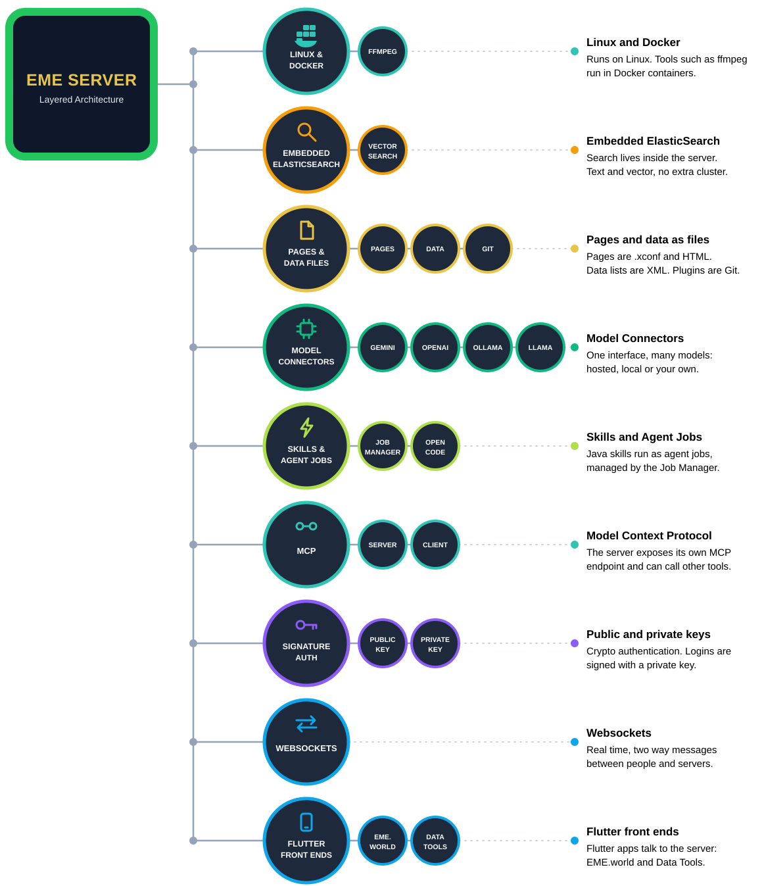
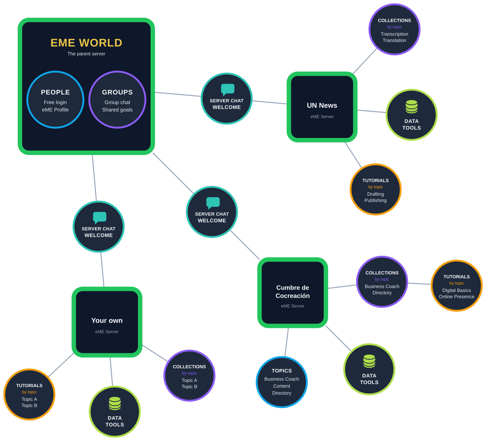

  <script type="application/ld+json">
  {
    "@context": "https://schema.org",
    "@type": "TechArticle",
    "headline": "EME Architecture: the parent server and its EME Servers",
    "description": "EME World is the parent server. It holds People and Groups. Each connected EME Server has its own Server Chat Welcome, Collections, Tutorials and Data Tools.",
    "inLanguage": "en",
    "about": ["EME World", "EME Server", "People", "Teams", "Collections", "Tutorials", "Data Tools", "Java", "Linux", "Docker", "ElasticSearch", "Model Context Protocol", "Websockets", "Flutter", "Public key cryptography"],
    "publisher": { "@type": "Organization", "name": "EME World", "url": "https://eme.world" }
  }
  </script>

<main>
    <section class="dev-hero compact">
      <div class="wrap">
        <span class="eyebrow">EME Pro</span>
      </div>
    </section>

    <section class="band soft" id="benefits" aria-labelledby="benefits-h">
      <div class="wrap">
        <div class="center">
          <span class="eyebrow">Why people choose EME</span>
          <h2 id="benefits-h">Technology that feels good to use</h2>
          <p class="lead narrow">Five human benefits, and the tools that deliver them.</p>
        </div>
        <div class="benefits">
          <article class="benefit">
            <div class="benefit-head">
              <span class="eyebrow">1. Lower cognitive load</span>
              <h3>Peace of Mind</h3>
              <p>Hand routine work to your EME and get back clarity and room to breathe.</p>
            </div>
            <ul class="tools">
              <li><svg class="fi" viewBox="0 0 24 24" fill="none" stroke="currentColor" stroke-width="1.5" stroke-linecap="round" stroke-linejoin="round" aria-hidden="true"><path d="M12 7v5l3 2"/><path d="M4 12a8 8 0 1 0 2.5-5.8"/><path d="M4 4v4h4"/></svg><span><strong>Memory</strong>Never start from zero</span></li>
              <li><svg class="fi" viewBox="0 0 24 24" fill="none" stroke="currentColor" stroke-width="1.5" stroke-linecap="round" stroke-linejoin="round" aria-hidden="true"><path d="M20 12a8 8 0 0 1-14 5"/><path d="M4 12a8 8 0 0 1 14-5"/><path d="M18 3v4h-4"/><path d="M6 21v-4h4"/></svg><span><strong>Automation</strong>Tasks that run on their own</span></li>
              <li><svg class="fi" viewBox="0 0 24 24" fill="none" stroke="currentColor" stroke-width="1.5" stroke-linecap="round" stroke-linejoin="round" aria-hidden="true"><path d="M20.6 13.4l-7.2 7.2a2 2 0 0 1-2.8 0L3 13V3h10l7.6 7.6a2 2 0 0 1 0 2.8z"/><circle cx="7.5" cy="7.5" r="1"/></svg><span><strong>Automated Tagging</strong>Searchable from day one</span></li>
              <li><svg class="fi" viewBox="0 0 24 24" fill="none" stroke="currentColor" stroke-width="1.5" stroke-linecap="round" stroke-linejoin="round" aria-hidden="true"><path d="M4 20h16"/><path d="M7 20v-7"/><path d="M12 20V6"/><path d="M17 20v-10"/></svg><span><strong>Informatics</strong>Clear dashboards, easier decisions</span></li>
            </ul>
          </article>
          <article class="benefit">
            <div class="benefit-head">
              <span class="eyebrow">2. Self determination</span>
              <h3>Personal Agency</h3>
              <p>No rigid stacks or corporate algorithms. You own your data and your direction.</p>
            </div>
            <ul class="tools">
              <li><svg class="fi" viewBox="0 0 24 24" fill="none" stroke="currentColor" stroke-width="1.5" stroke-linecap="round" stroke-linejoin="round" aria-hidden="true"><path d="M9 4C6 4 6 6 6 8s0 3-2 4c2 1 2 2 2 4s0 4 3 4"/><path d="M15 4c3 0 3 2 3 4s0 3 2 4c-2 1-2 2-2 4s0 4-3 4"/></svg><span><strong>Open API</strong>No lock in, no usage charges</span></li>
              <li><svg class="fi" viewBox="0 0 24 24" fill="none" stroke="currentColor" stroke-width="1.5" stroke-linecap="round" stroke-linejoin="round" aria-hidden="true"><circle cx="6" cy="5" r="2"/><circle cx="6" cy="19" r="2"/><circle cx="18" cy="9" r="2"/><path d="M6 7v10"/><path d="M18 11c0 3-4 4-12 6"/></svg><span><strong>Docker, Git and Linux</strong>Fits the tools you already use</span></li>
              <li><svg class="fi" viewBox="0 0 24 24" fill="none" stroke="currentColor" stroke-width="1.5" stroke-linecap="round" stroke-linejoin="round" aria-hidden="true"><rect x="3" y="4" width="6" height="5" rx="1"/><rect x="15" y="4" width="6" height="5" rx="1"/><rect x="9" y="15" width="6" height="5" rx="1"/><path d="M9 6.5h6"/><path d="M18 9v3H12v3"/></svg><span><strong>Workflow Editor</strong>Design how your work flows</span></li>
              <li><svg class="fi" viewBox="0 0 24 24" fill="none" stroke="currentColor" stroke-width="1.5" stroke-linecap="round" stroke-linejoin="round" aria-hidden="true"><circle cx="12" cy="5" r="2"/><circle cx="5" cy="19" r="2"/><circle cx="19" cy="19" r="2"/><circle cx="12" cy="13" r="2"/><path d="M12 7v4"/><path d="M10.5 14.5L6.5 17.5"/><path d="M13.5 14.5l4 3"/></svg><span><strong>Orchestration</strong>Many agents, you in charge</span></li>
              <li><svg class="fi" viewBox="0 0 24 24" fill="none" stroke="currentColor" stroke-width="1.5" stroke-linecap="round" stroke-linejoin="round" aria-hidden="true"><rect x="5" y="8" width="14" height="10" rx="3"/><path d="M12 4v4"/><circle cx="9" cy="13" r="1"/><circle cx="15" cy="13" r="1"/></svg><span><strong>Agents</strong>Routine work handed off</span></li>
              <li><svg class="fi" viewBox="0 0 24 24" fill="none" stroke="currentColor" stroke-width="1.5" stroke-linecap="round" stroke-linejoin="round" aria-hidden="true"><rect x="3" y="4" width="7" height="6" rx="1"/><rect x="14" y="14" width="7" height="6" rx="1"/><path d="M10 7h4a3 3 0 0 1 3 3v4"/></svg><span><strong>Smart Organizer</strong>Everything in its place</span></li>
            </ul>
          </article>
          <article class="benefit">
            <div class="benefit-head">
              <span class="eyebrow">3. A sustainable pace</span>
              <h3>Balance, Not Burnout</h3>
              <p>Protect your time and energy for family, rest and growth.</p>
            </div>
            <ul class="tools">
              <li><svg class="fi" viewBox="0 0 24 24" fill="none" stroke="currentColor" stroke-width="1.5" stroke-linecap="round" stroke-linejoin="round" aria-hidden="true"><rect x="3" y="5" width="18" height="16" rx="2"/><path d="M3 10h18"/><path d="M8 3v4"/><path d="M16 3v4"/><path d="M12 13v3l2 1"/></svg><span><strong>Scheduler</strong>Work happens at the right time</span></li>
              <li><svg class="fi" viewBox="0 0 24 24" fill="none" stroke="currentColor" stroke-width="1.5" stroke-linecap="round" stroke-linejoin="round" aria-hidden="true"><path d="M9 6h11"/><path d="M9 12h11"/><path d="M9 18h11"/><path d="M3.5 6l1.2 1.2L7 5"/><path d="M3.5 12l1.2 1.2L7 11"/><path d="M3.5 18l1.2 1.2L7 17"/></svg><span><strong>Job Manager</strong>See what is running at a glance</span></li>
              <li><svg class="fi" viewBox="0 0 24 24" fill="none" stroke="currentColor" stroke-width="1.5" stroke-linecap="round" stroke-linejoin="round" aria-hidden="true"><rect x="9" y="3" width="6" height="11" rx="3"/><path d="M5 11a7 7 0 0 0 14 0"/><path d="M12 18v3"/></svg><span><strong>Transcribing &amp; Voice to Text</strong>Talk instead of type</span></li>
              <li><svg class="fi" viewBox="0 0 24 24" fill="none" stroke="currentColor" stroke-width="1.5" stroke-linecap="round" stroke-linejoin="round" aria-hidden="true"><path d="M9 3v5"/><path d="M15 3v5"/><path d="M6 8h12v4a6 6 0 0 1-12 0z"/><path d="M12 18v3"/></svg><span><strong>MCP Server and Client</strong>Connect any agent or tool</span></li>
            </ul>
          </article>
          <article class="benefit">
            <div class="benefit-head">
              <span class="eyebrow">4. Shared purpose</span>
              <h3>Belonging</h3>
              <p>Join an open source collective intelligence built to lift each other up.</p>
            </div>
            <ul class="tools">
              <li><svg class="fi" viewBox="0 0 24 24" fill="none" stroke="currentColor" stroke-width="1.5" stroke-linecap="round" stroke-linejoin="round" aria-hidden="true"><path d="M4 5h16v11H9l-5 4z"/></svg><span><strong>Chat</strong>Free for everyone, mobile and web</span></li>
              <li><svg class="fi" viewBox="0 0 24 24" fill="none" stroke="currentColor" stroke-width="1.5" stroke-linecap="round" stroke-linejoin="round" aria-hidden="true"><path d="M4 5h9"/><path d="M8.5 3v2"/><path d="M6 5c.5 4 3 7 6 8"/><path d="M11 5c-.5 4-3 7-6 8"/><path d="M13 21l4-10 4 10"/><path d="M14.5 18h5"/></svg><span><strong>Translation</strong>Talk across languages</span></li>
              <li><svg class="fi" viewBox="0 0 24 24" fill="none" stroke="currentColor" stroke-width="1.5" stroke-linecap="round" stroke-linejoin="round" aria-hidden="true"><path d="M4 6h16"/><path d="M4 12h6"/><path d="M4 18h16"/><rect x="12.5" y="9" width="7.5" height="6" rx="2"/></svg><span><strong>Named Entity Recognition</strong>Link people, places and groups</span></li>
              <li><svg class="fi" viewBox="0 0 24 24" fill="none" stroke="currentColor" stroke-width="1.5" stroke-linecap="round" stroke-linejoin="round" aria-hidden="true"><path d="M4 8V5a1 1 0 0 1 1-1h3"/><path d="M16 4h3a1 1 0 0 1 1 1v3"/><path d="M20 16v3a1 1 0 0 1-1 1h-3"/><path d="M8 20H5a1 1 0 0 1-1-1v-3"/><path d="M9 10v1"/><path d="M15 10v1"/><path d="M9.5 15c1.5 1.3 3.5 1.3 5 0"/></svg><span><strong>Facial Recognition</strong>Find the people in your photos</span></li>
              <li><svg class="fi" viewBox="0 0 24 24" fill="none" stroke="currentColor" stroke-width="1.5" stroke-linecap="round" stroke-linejoin="round" aria-hidden="true"><path d="M4 9h14l-3-3"/><path d="M20 15H6l3 3"/></svg><span><strong>Server Sync</strong>Communities stay in step</span></li>
              <li><svg class="fi" viewBox="0 0 24 24" fill="none" stroke="currentColor" stroke-width="1.5" stroke-linecap="round" stroke-linejoin="round" aria-hidden="true"><circle cx="10.5" cy="10.5" r="6.5"/><path d="M15.5 15.5L21 21"/><circle cx="8.5" cy="10.5" r=".7"/><circle cx="12.5" cy="8.5" r=".7"/><circle cx="12.5" cy="12.5" r=".7"/></svg><span><strong>Semantic Vector Search</strong>Find things by meaning</span></li>
            </ul>
          </article>
          <article class="benefit">
            <div class="benefit-head">
              <span class="eyebrow">5. A lasting legacy</span>
              <h3>Pride in What You Build</h3>
              <p>A system that belongs to you, and work that endures over time.</p>
            </div>
            <ul class="tools">
              <li><svg class="fi" viewBox="0 0 24 24" fill="none" stroke="currentColor" stroke-width="1.5" stroke-linecap="round" stroke-linejoin="round" aria-hidden="true"><ellipse cx="12" cy="6" rx="7" ry="3"/><path d="M5 6v12c0 1.7 3.1 3 7 3s7-1.3 7-3V6"/><path d="M5 12c0 1.7 3.1 3 7 3s7-1.3 7-3"/></svg><span><strong>Database</strong>Your data, your structure</span></li>
              <li><svg class="fi" viewBox="0 0 24 24" fill="none" stroke="currentColor" stroke-width="1.5" stroke-linecap="round" stroke-linejoin="round" aria-hidden="true"><rect x="3" y="4" width="18" height="5" rx="1"/><path d="M5 9v10h14V9"/><path d="M10 13h4"/></svg><span><strong>Storage</strong>Safe on dedicated hardware</span></li>
              <li><svg class="fi" viewBox="0 0 24 24" fill="none" stroke="currentColor" stroke-width="1.5" stroke-linecap="round" stroke-linejoin="round" aria-hidden="true"><path d="M4 20V4"/><path d="M4 20h16"/><path d="M4 20L16 8"/><path d="M12 8h4v4"/></svg><span><strong>Embeddings</strong>Talk to your own files</span></li>
              <li><svg class="fi" viewBox="0 0 24 24" fill="none" stroke="currentColor" stroke-width="1.5" stroke-linecap="round" stroke-linejoin="round" aria-hidden="true"><path d="M4 6h10"/><path d="M7 11h7"/><path d="M7 16h5"/><path d="M17 20l4-4-3-3-4 4v3z"/></svg><span><strong>Smart Creator</strong>Build content visually</span></li>
              <li><svg class="fi" viewBox="0 0 24 24" fill="none" stroke="currentColor" stroke-width="1.5" stroke-linecap="round" stroke-linejoin="round" aria-hidden="true"><rect x="2" y="5" width="20" height="14" rx="2"/><path d="M6 15V9l3 3 3-3v6"/><path d="M16 9v6"/><path d="M14 13l2 2 2-2"/></svg><span><strong>Markdown Creation</strong>Documents that stay readable</span></li>
              <li><svg class="fi" viewBox="0 0 24 24" fill="none" stroke="currentColor" stroke-width="1.5" stroke-linecap="round" stroke-linejoin="round" aria-hidden="true"><rect x="3" y="6" width="13" height="12" rx="2"/><path d="M16 10l5-3v10l-5-3"/></svg><span><strong>Video Editing</strong>Turn moments into stories</span></li>
            </ul>
          </article>
        </div>
      </div>
    </section>

    <div class="band" style="padding-top:8px;">
        <div class="wrap arch">

          <figure class="architecture" id="inside">
            <header class="arch-head">
              <h1>Object Orientated Knowledge Management</h1>
              <p>Every EME Server is completely self contained. The only harness built this way.</p>
            </header>
            <a href="./overview/eme-object-architecture.svg" aria-label="Open the full size diagram"></a>
          </figure>

          <figure class="architecture" id="diagram">
            <figcaption><strong>EME World is the parent server.</strong> It holds the People and the Teams. Every EME Server connects to it and keeps its own Collections, Tutorials and Data Tools. A thick green border marks an EME Server.</figcaption>
            <a href="./overview/eme-world-parent-server.svg" aria-label="Open the full size diagram"></a>
          </figure>

        </div>
    </div>
  </main>
